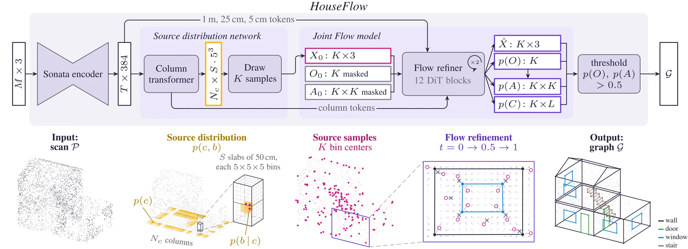
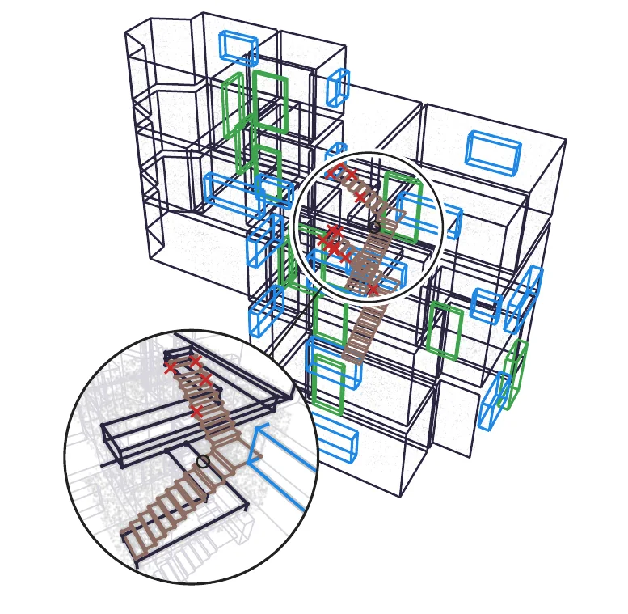
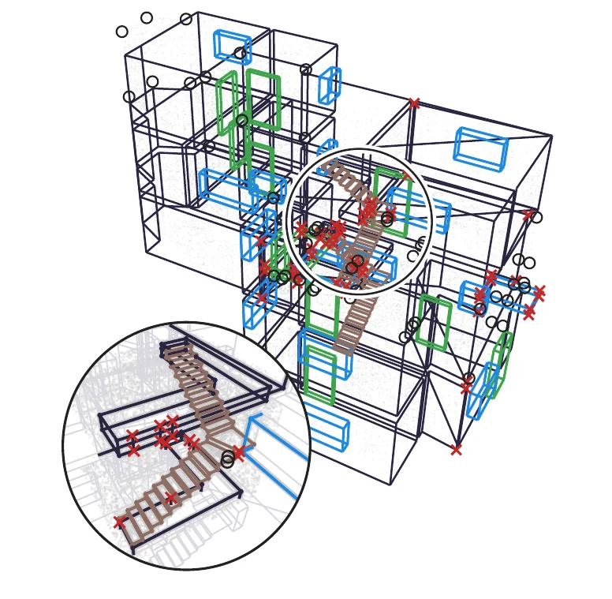
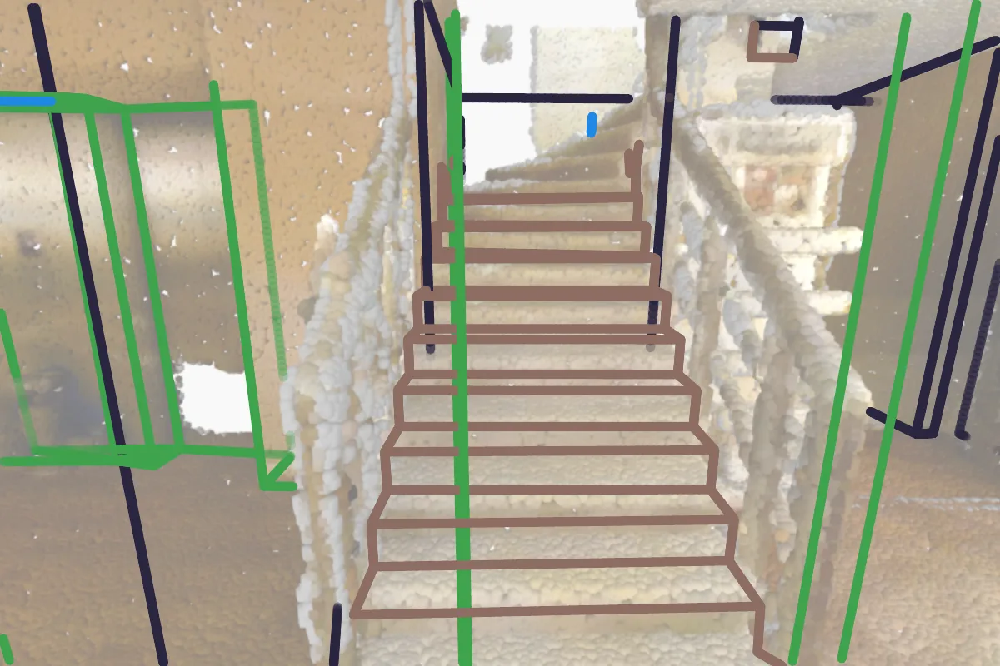
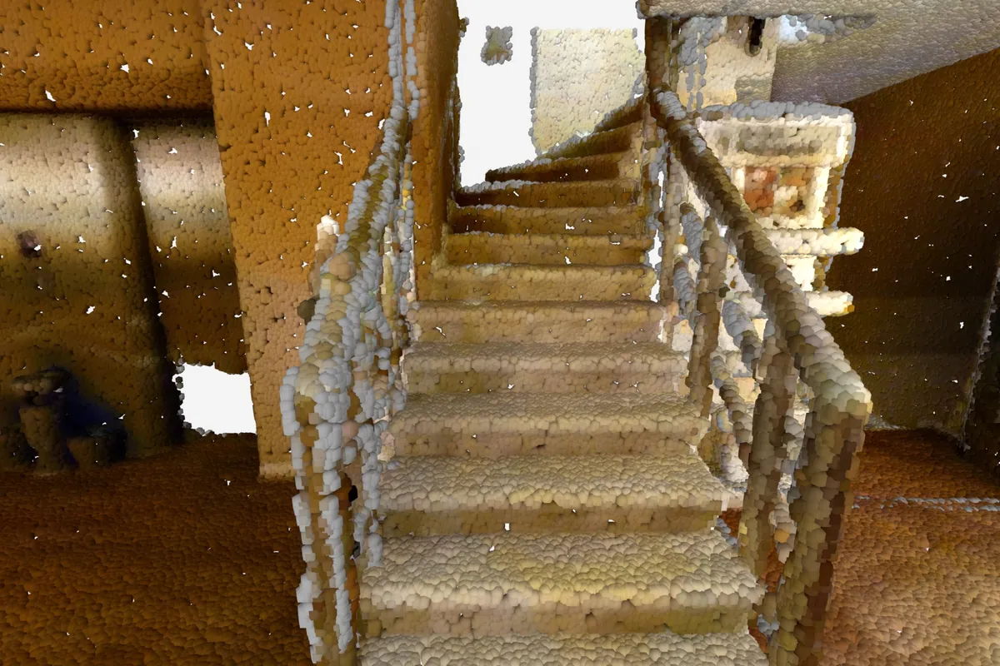

Video
Overview
We reconstruct the interior layout of a building as a 3D graph of corners and edges, without a predefined vocabulary of primitives. A source distribution conditioned on the scan places samples near the corners. A multimodal flow then refines the sample positions and jointly predicts which samples exist, their classes and their edges, in two steps.
Explore in 3D
Test buildings from HouseScan-100K and ASE, picked by hand and never seen in training. Drag the divider to compare the scan with the predicted graph. Drag the building to orbit, scroll or pinch to zoom.
Abstract
Autoregressive methods achieve the best results in reconstructing structured 3D layouts from indoor scans, but they rely on a handcrafted vocabulary of primitives that must be extended for every new type of structure. We ask whether such layouts can be learned without predefined primitives. HouseFlow represents a building as a graph and generates it with a multimodal flow that jointly predicts continuous vertex positions and discrete classes and edges. Because a flow from random noise fails to place the corners precisely, we learn a scan-conditioned source distribution that starts the flow close to the corners. HouseFlow outperforms all baselines on ASE and on HouseScan-100K, our new multi-story benchmark, more than doubling the score at a 1 cm tolerance on the latter while running up to 48 times faster than the best competitor on large buildings. On real scans, zero-shot, it more than triples the score of the best baseline at a 10 cm tolerance. Code and datasets will be released.
How it works
The output is a graph: K candidate corners, each with a 3D position, an existence flag, a class (wall, door, window, stair) and edges to other corners. Everything else, geometry and connectivity, is learned from data.
Real output of the final model on ASE test scene 77711: source density, start and end positions, existence probabilities, classes and edges all come from one forward pass. Paths between start and end are drawn straight, and the order in which decisions appear is illustrative. Click a stage above to jump to it, and drag the scene sideways to turn it.
Learned source distribution
A Sonata point encoder and a transformer over 50 cm columns predict where corners are: a probability p(c, b) = p(c) p(b | c) over columns and over 5×5×5 bins of 10 cm inside each column. We draw an over-complete sample set from it: the strongest peaks plus systematic draws from the remaining mass.
Multimodal flow
Each sample is a token. Its position follows a straight continuous flow xt = (1−t) x0 + t x1 to its matched corner. Existence, class and edges follow a discrete masking path that reveals each clean value with probability t. Twelve time-conditioned transformer layers refine all of them jointly.
Two steps to a graph
Samples start at their bin centres. Two Euler steps on t = 0 → ½ → 1 move them onto the corners. The most confident existence decisions come first, and the second pass decides the rest and can revise them. Edges are scored only between kept corners.
Why learn the source?
A flow from uniform noise starts metres away from corners that must be placed within centimetres. The learned source finds the corners, and the flow places them. Its samples come within the flow's 25 cm capture radius of 98.4% of ASE corners and 99.8% of HouseScan-100K corners.
Show the full architecture figure

HouseScan-100K
A new scan benchmark that goes beyond single-storey Manhattan layouts. It builds on the building shells and floor plans of SynBuild3D. We connect storeys with straight, L-shaped, U-shaped and spiral staircases, add furniture for realistic occlusion, simulate an egocentric walk-through scan and extract the ground-truth layout graph of the interior.
Split: 90,396 training, 5,460 validation and 5,460 test buildings.
| HouseScan-100K | ASE | |
|---|---|---|
| Scenes | 101,316 | 100k |
| Storeys | 3.3 on average | 1 |
| Rooms | 15.9 | 2.1 |
| Graph corners | 703 | 53 |
| Stairs | straight, L, U, spiral | none |
| Geometry | non-Manhattan rooms, sloped ceilings, gables, roof windows | Manhattan walls |
Results
We compare against a floor-plan method (RoomFormer) and two autoregressive structured-language methods (SceneScript, SpatialLM), all retrained on the same data. Variants marked * are ours, with finer coordinate tokens to give the baselines centimetre resolution. HSS is the harmonic mean of corner F1 and edge IoU at a tolerance r.
Inference time and building size
Median inference time per HouseScan-100K test building, in six size groups of 150 timed buildings, log scale. Hover or tap for the times at one size. The autoregressive decoders write one token at a time, so their time grows with the number of corners.
Qualitative comparison
Test scenes with close-ups. Drag across the image to compare HouseFlow (right) with a baseline or the ground truth (left). Both baselines are our 1 cm-token variants.


Real scans, zero-shot
HouseLayout3D has 16 annotated real multi-storey buildings from Matterport3D and no training split, so all models are trained on HouseScan-100K only. The real scans are noisy and incomplete, and all methods score lower than on synthetic data (HouseLayout3D tab above). Real layout reconstruction remains hard, and larger real training sets are needed.

